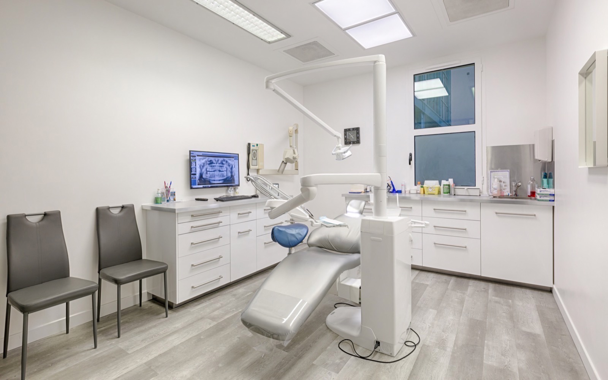

Cabinet dentaire à Serris · Marne-la-Vallée
Bienvenue au Centre Dentaire du Val d'Europe
Une équipe de chirurgiens-dentistes vous accueille pour vos soins dentaires, urgences, implantologie, parodontie, prothèses et esthétique dentaire.
Urgences assurées tous les jours sans rendez-vous, sous réserve de disponibilités.

Horaires
Lun-Ven : 9h30 à 13h et 14h à 19h30
Sam : 9h30 à 15h
Sam : 9h30 à 15h
77700 Serris Marne-la-Vallée

Le cabinet
Des soins dentaires modernes, dans un cadre clair et rassurant
Les progrès et nouvelles techniques approuvées par la dentisterie moderne permettent à l'équipe du Centre dentaire du Val d'Europe (77) à Serris de vous proposer des soins intégrants toutes les spécialités en dentisterie (la prothèse, l'implantologie, la parodontie) pour une bonne hygiène dentaire au quotidien, avec le souci permanent de la meilleure esthétique dentaire.
Découvrir le cabinetParcours patient
Les informations importantes, sans surcharge
01
Soins et spécialités
Prothèse, implantologie, parodontie, esthétique dentaire et santé bucco-dentaire.
02L'équipe
Chirurgiens-dentistes, assistantes dentaires et liens Doctolib conservés depuis le site actuel.
03Conseils patients
Toutes les fiches pratiques du site original, organisées par grandes thématiques.